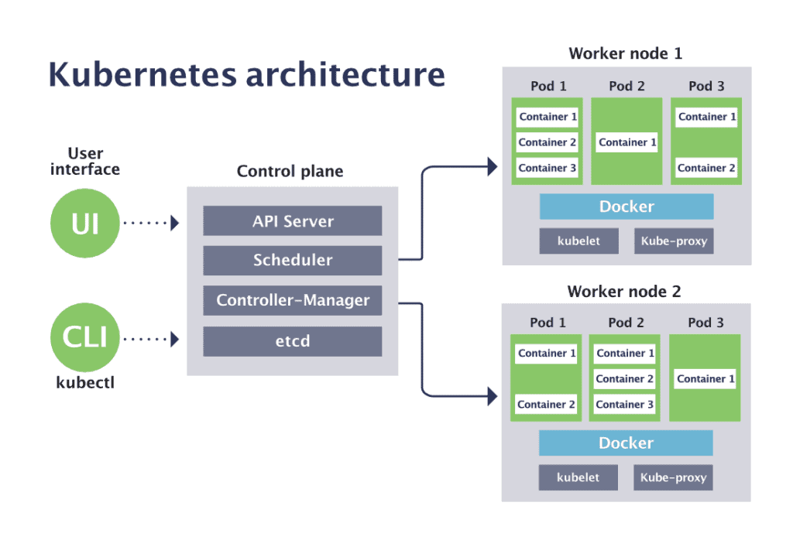
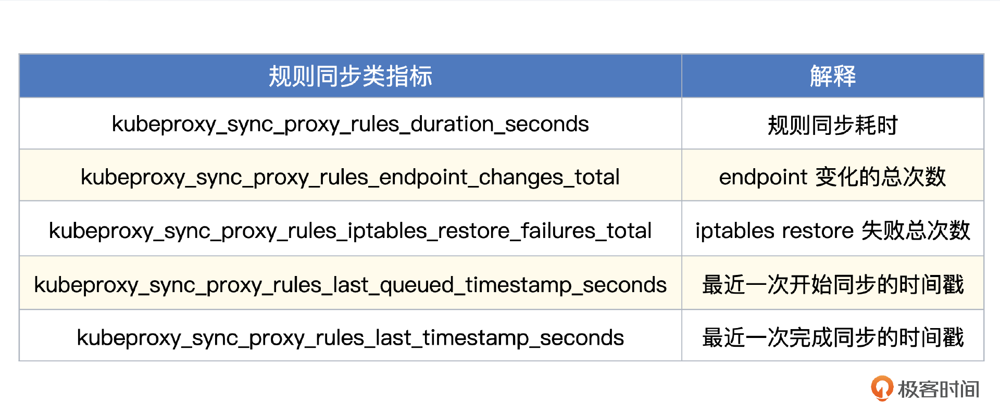
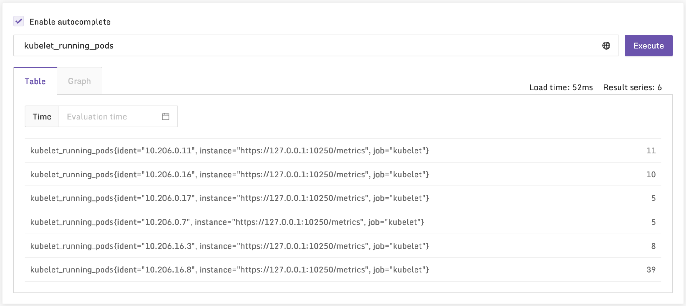
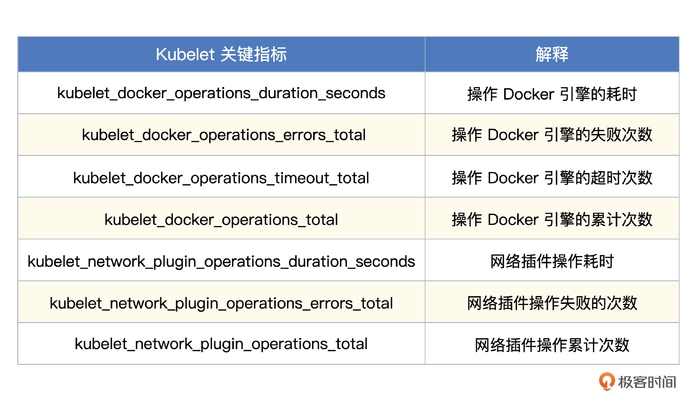

Kubernetes
Kubernetes Node
下面是 Kubernetes 的架构图，用户交互部分是 UI 和 CLI，这两个不需要监控，关键是 Control plane（控制面）和 Worker node（工作负载节点）。控制面的组件提供了管理和调度能力，如果控制面组件出了问题，我们就没法给 Kubernetes 下发指令了。工作负载节点运行了容器，以及管理这些容器的运行时引擎（图上的 Docker）、管理 Pod 的 Kubelet，以及转发规则的 Kube-Proxy。工作负载节点如果出问题，可能会直接影响业务流量，所以对这类节点的监控就显得更为重要了。

当然，除了控制面组件和工作负载节点的监控，整个 Kubernetes 监控体系还应该包含另外三部分，一个是 Kubernetes 所在宿主的监控，一个是 Kubernetes 上面运行对象的监控，还有一个是 Pod 内业务的监控。宿主的监控就是机器的监控。Kubernetes 的对象监控，使用 kube-state-metrics（简称KSM） 监控。Pod 内的业务的监控，已经超过了组件监控的范畴。
所以 Kubernetes 组件监控，需要重点关注控制面、工作负载、KSM三个方面的监控。随着越来越多公司选择公有云的 Kubernetes 托管服务，控制面的组件直接交给云厂商来托管了，我们只需要关注工作负载节点，所以这一讲我们先来介绍工作负载节点的监控。
工作负载节点我们重点关注两部分，一个是容器负载，一个是组件，组件又包括 Kube-Proxy、Kubelet、容器引擎。容器引擎一般不会出问题，所以我们重点关注 Kubernetes 的两个组件 Kube-Proxy 和 Kubelet。按照先易后难，循序渐进的顺序，我们先来看一下 Kube-Proxy 的监控方案。
监控 Kube-Proxy
所有的 Kubernetes 组件，都提供了 /metrics 接口用来暴露监控数据，Kube-Proxy 也不例外。通过 ss 或者 netstat 命令可以看到 Kube-Proxy 监听的端口，一个是 10249，用来暴露监控指标，一个是 10256 ，作为健康检查的端口，一般我们只关注前一个端口。下面我来测试一下。
[root@tt-fc-dev01.nj ~]# curl -s localhost:10249/metrics | head -n 6
# HELP apiserver_audit_event_total [ALPHA] Counter of audit events generated and sent to the audit backend.
# TYPE apiserver_audit_event_total counter
apiserver_audit_event_total 0
# HELP apiserver_audit_requests_rejected_total [ALPHA] Counter of apiserver requests rejected due to an error in audit logging backend.
# TYPE apiserver_audit_requests_rejected_total counter
apiserver_audit_requests_rejected_total 0
不需要认证直接就可以拿到指标，很简单，我们只要有个采集器能够抓取这个数据就可以了。支持 Prometheus 协议数据抓取的采集器挺多的，这里我还是使用 Categraf 给你演示，相信通过前面几讲的演示，你对 Categraf 已经很熟悉了。
配置采集规则
抓取 Prometheus 协议的数据，使用 Categraf 的 input.prometheus 插件，配置文件在 conf/input.prometheus/prometheus.toml，要抓取哪个目标地址，就直接把 URL 配置到抓取地址中，可以参考下面的样例。
interval = 15
[[instances]]
urls = [
"http://localhost:10249/metrics"
]
labels = { job="kube-proxy" }
之后我们就可以使用 ./categraf --test --inputs prometheus 测试了，如果一切正常，在控制台就能看到采集到的 Kube-Proxy 相关的指标，具体哪些指标比较关键呢？先不急，后面我会谈到。
Kube-Proxy 在 Kubernetes 集群的所有节点上部署，如果使用上面的采集规则配置方式，就需要在所有 Kubernetes 节点的 Categraf 上配置采集规则，未来扩容节点的时候，也要记得在新节点配置采集规则。如果机器初始化流程做得不错，也还好，否则的话就会比较麻烦。我更推荐的方式，是把 Categraf 作为 Daemonset 部署，这样每次新节点扩容，Kubernetes 会自动调度，省事不少。下面我来演示一下如何部署 Categraf Daemonset。
使用 Daemonset 部署采集器
要把 Categraf 部署为 Daemonset，需要先创建一个 namespace，然后把相关的配置做成 ConfigMap，下面我做一个演示，先创建 namespace。
# 创建 namespace
$ kubectl create namespace flashcat
namespace/flashcat created
# 查询刚刚创建的namespace，看是否创建成功
$ kubectl get ns | grep flashcat
flashcat Active 29s
然后创建 ConfigMap，ConfigMap 用来放置 Categraf 的主配置 config.toml，以及 input.prometheus 插件的配置 prometheus.toml，你可以看一下相关的 YAML 内容。
---
kind: ConfigMap
metadata:
name: categraf-config
apiVersion: v1
data:
config.toml: |
[global]
hostname = "$HOSTNAME"
interval = 15
providers = ["local"]
[writer_opt]
batch = 2000
chan_size = 10000
[[writers]]
url = "http://10.206.0.16:19000/prometheus/v1/write"
timeout = 5000
dial_timeout = 2500
max_idle_conns_per_host = 100
---
kind: ConfigMap
metadata:
name: categraf-input-prometheus
apiVersion: v1
data:
prometheus.toml: |
[[instances]]
urls = ["http://127.0.0.1:10249/metrics"]
labels = { job="kube-proxy" }
上例中的 http://10.206.0.16:19000/prometheus/v1/write 是一个支持 Prometheus Remote Write 协议的数据接收地址，可以使用你的 n9e-server，也可以使用 vminsert、prometheus 等其他支持 RemoteWrite 协议的地址。 hostname = "$HOSTNAME" 这个配置用了 $ 符号，后面创建 Daemonset 的时候会注入 HOSTNAME 这个环境变量，让 Categraf 自动拿到。
prometheus.toml 的配置中，除了给出 Kube-Proxy 的抓取地址，还手工指定了一个 job 标签，用来标识这个数据来自哪个组件。如果公司有多套 Kubernetes 集群，所有监控数据都会进到一个时序库，为了区分不同的集群，我建议你在标签里再加一个 cluster 的标签。
比如：
labels = { job="kube-proxy", cluster="beijing01" }
下面我们把 ConfigMap 创建出来。
[work@tt-fc-dev01.nj yamls]$ kubectl apply -f categraf-configmap-v1.yaml -n flashcat
configmap/categraf-config created
configmap/categraf-input-prometheus created
[work@tt-fc-dev01.nj yamls]$ kubectl get configmap -n flashcat
NAME DATA AGE
categraf-config 1 19s
categraf-input-prometheus 1 19s
kube-root-ca.crt 1 22m
配置文件准备好了，接下来就可以创建 Daemonset 了。这里要注意，把 HOSTNAME 作为环境变量注入进去，你可以参考我给出的这个 Daemonset 的 YAML 文件。
apiVersion: apps/v1
kind: DaemonSet
metadata:
labels:
app: categraf-daemonset
name: categraf-daemonset
spec:
selector:
matchLabels:
app: categraf-daemonset
template:
metadata:
labels:
app: categraf-daemonset
spec:
containers:
- env:
- name: TZ
value: Asia/Shanghai
- name: HOSTNAME
valueFrom:
fieldRef:
apiVersion: v1
fieldPath: spec.nodeName
- name: HOSTIP
valueFrom:
fieldRef:
apiVersion: v1
fieldPath: status.hostIP
image: flashcatcloud/categraf:v0.2.18
imagePullPolicy: IfNotPresent
name: categraf
volumeMounts:
- mountPath: /etc/categraf/conf
name: categraf-config
- mountPath: /etc/categraf/conf/input.prometheus
name: categraf-input-prometheus
hostNetwork: true
restartPolicy: Always
tolerations:
- effect: NoSchedule
operator: Exists
volumes:
- configMap:
name: categraf-config
name: categraf-config
- configMap:
name: categraf-input-prometheus
name: categraf-input-prometheus
最后一步，apply 一下这个 Daemonset 的 YAML 文件。
[work@tt-fc-dev01.nj yamls]$ kubectl apply -f categraf-daemonset-v1.yaml -n flashcat
daemonset.apps/categraf-daemonset created
[work@tt-fc-dev01.nj yamls]$ kubectl get ds -o wide -n flashcat
NAME DESIRED CURRENT READY UP-TO-DATE AVAILABLE NODE SELECTOR AGE CONTAINERS IMAGES SELECTOR
categraf-daemonset 6 6 6 6 6 <none> 2m20s categraf flashcatcloud/categraf:v0.2.17 app=categraf-daemonset
[work@tt-fc-dev01.nj yamls]$ kubectl get pods -o wide -n flashcat
NAME READY STATUS RESTARTS AGE IP NODE NOMINATED NODE READINESS GATES
categraf-daemonset-4qlt9 1/1 Running 0 2m10s 10.206.0.7 10.206.0.7 <none> <none>
categraf-daemonset-s9bk2 1/1 Running 0 2m10s 10.206.0.11 10.206.0.11 <none> <none>
categraf-daemonset-w77lt 1/1 Running 0 2m10s 10.206.16.3 10.206.16.3 <none> <none>
categraf-daemonset-xgwf5 1/1 Running 0 2m10s 10.206.0.16 10.206.0.16 <none> <none>
categraf-daemonset-z9rk5 1/1 Running 0 2m10s 10.206.16.8 10.206.16.8 <none> <none>
categraf-daemonset-zdp8v 1/1 Running 0 2m10s 10.206.0.17 10.206.0.17 <none> <none>
看起来一切正常，去监控服务端查询一下 kubeproxy 打头的指标，理论上就能看到采集到的数据了。Kube-Proxy 暴露了不少指标，下面我挑选一些关键指标稍作解释。
Kube-Proxy 指标解释
- 通用的 Go 程序相关的指标
| 通用的 Go 程序相关的指标 | 解释 |
|---|---|
| go_gc_duration_seconds | GC 时间 |
| go_goroutines | Gorountine 数量 |
| go_threads | 线程数量 |
| process_max_fds | 进程可以打开的最大文件句柄数量 |
| process_open_fds | 进程当前可以打开了多少文件句柄 |
| process_resident_memory_bytes | 内存使用大小 |
| process_cpu_seconds_total | 进程使用的 CPU 时间 |
| process_start_time_seconds | 进程启动时间戳 |
以上指标，只要是通过 Prometheus Go SDK 埋点的程序都会有，除了 Kube-Proxy，后面介绍的 Kubelet、APIServer、Scheduler 等，也全部都有，这里你记住了，后面我就不会重复介绍了。
- 请求 APIServer 的指标
Kubernetes 中多个组件都要调用 APIServer 的接口，每秒调用多少次、有多少成功多少失败、耗时情况如何，这些指标也比较关键。
比如：
- rest_client_request_duration_seconds：请求 APIServer 的耗时统计
- rest_client_requests_total：请求 APIServer 的调用量统计
- 规则同步类指标
Kube-Proxy 的核心职能，就是去 APIServer 获取转发规则，修改本地的 iptables 或者 ipvs 的规则，所以这些规则同步相关的指标，就至关重要了。这里列出几个核心指标。

Categraf 内置了 Kube-Proxy 的 监控大盘，关键的核心指标都已经做到监控大盘里了，导入夜莺就能使用。
监控 Kubelet
Kubelet 也是在所有 Kubernetes 节点上部署的，理论上可以采用和 Kube-Proxy 完全一样的监控方法，但是 Kubelet 的接口需要认证，我们来测试一下。
$ ps aux|grep kubelet
root 163490 0.0 0.0 12136 1064 pts/1 S+ 13:34 0:00 grep --color=auto kubelet
root 166673 3.2 1.0 3517060 81336 ? Ssl Aug16 4176:52 /usr/bin/kubelet --bootstrap-kubeconfig=/etc/kubernetes/bootstrap-kubelet.conf --kubeconfig=/etc/kubernetes/kubelet.conf --config=/var/lib/kubelet/config.yaml --hostname-override=10.206.0.16 --network-plugin=cni --pod-infra-container-image=registry.aliyuncs.com/google_containers/pause:3.6
$ cat /var/lib/kubelet/config.yaml | grep 102
healthzPort: 10248
$ curl localhost:10248/healthz
ok
$ curl localhost:10250/metrics
Client sent an HTTP request to an HTTPS server.
$ curl https://localhost:10250/metrics
curl: (60) SSL certificate problem: self signed certificate in certificate chain
More details here: https://curl.haxx.se/docs/sslcerts.html
curl failed to verify the legitimacy of the server and therefore could not
establish a secure connection to it. To learn more about this situation and
how to fix it, please visit the web page mentioned above.
$ curl -k https://localhost:10250/metrics
Unauthorized
这几条测试命令可以说明很多问题，首先是Kubelet 监听了两个端口，一个是 10248，是个健康检查端口，另一个是 10250，暴露 metrics 指标，但是访问这个接口需要传入 Authorization 的 Token，下面我们就来创建 ServiceAccount。Kubernetes 会为 ServiceAccount 自动分配 Token。
引入认证信息
只创建 ServiceAccount 没什么用，还需要为这个账号绑定权限，Kubernetes 中使用 ClusterRole 来定义权限，使用 ClusterRoleBinding 来绑定 ClusterRole 和 ServiceAccount，下面是相关 YAML 定义。
---
apiVersion: rbac.authorization.k8s.io/v1
kind: ClusterRole
metadata:
name: categraf-daemonset
rules:
- apiGroups:
- ""
resources:
- nodes/metrics
- nodes/stats
- nodes/proxy
verbs:
- get
---
apiVersion: v1
kind: ServiceAccount
metadata:
name: categraf-daemonset
namespace: flashcat
---
apiVersion: rbac.authorization.k8s.io/v1
kind: ClusterRoleBinding
metadata:
name: categraf-daemonset
roleRef:
apiGroup: rbac.authorization.k8s.io
kind: ClusterRole
name: categraf-daemonset
subjects:
- kind: ServiceAccount
name: categraf-daemonset
namespace: flashcat
把上面的内容保存为 auth.yaml，apply 一下，然后我们从 ServiceAccount 中提取 Token，做一下 metrics 接口的请求测试。
[work@tt-fc-dev01.nj yamls]$ kubectl apply -f auth.yaml
clusterrole.rbac.authorization.k8s.io/categraf-daemonset created
serviceaccount/categraf-daemonset created
clusterrolebinding.rbac.authorization.k8s.io/categraf-daemonset created
[work@tt-fc-dev01.nj yamls]$ kubectl get sa -n flashcat
NAME SECRETS AGE
categraf-daemonset 1 90m
default 1 4d23h
[root@tt-fc-dev01.nj qinxiaohui]# kubectl get sa categraf-daemonset -n flashcat -o yaml
apiVersion: v1
kind: ServiceAccount
metadata:
annotations:
kubectl.kubernetes.io/last-applied-configuration: |
{"apiVersion":"v1","kind":"ServiceAccount","metadata":{"annotations":{},"name":"categraf-daemonset","namespace":"flashcat"}}
creationTimestamp: "2022-11-14T03:53:54Z"
name: categraf-daemonset
namespace: flashcat
resourceVersion: "120570510"
uid: 22f5a785-871c-4454-b82e-12bf104450a0
secrets:
- name: categraf-daemonset-token-7mccq
[root@tt-fc-dev01.nj qinxiaohui]# token=`kubectl get secret categraf-daemonset-token-7mccq -n flashcat -o jsonpath={.data.token} | base64 -d`
[root@tt-fc-dev01.nj qinxiaohui]# curl -s -k -H "Authorization: Bearer $token" https://localhost:10250/metrics > aaaa
[root@tt-fc-dev01.nj qinxiaohui]# head -n 5 aaaa
# HELP apiserver_audit_event_total [ALPHA] Counter of audit events generated and sent to the audit backend.
# TYPE apiserver_audit_event_total counter
apiserver_audit_event_total 0
# HELP apiserver_audit_requests_rejected_total [ALPHA] Counter of apiserver requests rejected due to an error in audit logging backend.
# TYPE apiserver_audit_requests_rejected_total counter
apiserver_audit_requests_rejected_total 0
这几个命令看起来比较清晰了，创建的 ServiceAccount 名为 categraf-daemonset，导出为 YAML 之后，看到 secret 的 name 是 categraf-daemonset-token-7mccq，然后从这个 secret 中解出 Token，放到 Header 里，请求 Kubelet 的 metrics 接口，最终拿到了数据，搞定收工。
后面我们把 Categraf 作为采集器做成 Daemonset，再为 Categraf 这个 Daemonset 指定 ServiceAccountName，Kubernetes就会自动把 Token 的内容挂到 Daemonset 的目录里，下面我们开始实操。
升级 Categraf Daemonset
采集 Kube-Proxy 的时候，我们已经准备好了 Categraf Daemonset 用到的 ConfigMap，当时只是抓取了 Kube-Proxy 的 metrics 数据，下面我们升级一下这个 ConfigMap 的内容，加上对 Kubelet 的数据抓取规则。
---
kind: ConfigMap
metadata:
name: categraf-config
apiVersion: v1
data:
config.toml: |
[global]
hostname = "$HOSTNAME"
interval = 15
providers = ["local"]
[writer_opt]
batch = 2000
chan_size = 10000
[[writers]]
url = "http://10.206.0.16:19000/prometheus/v1/write"
timeout = 5000
dial_timeout = 2500
max_idle_conns_per_host = 100
---
kind: ConfigMap
metadata:
name: categraf-input-prometheus
apiVersion: v1
data:
prometheus.toml: |
[[instances]]
urls = ["http://127.0.0.1:10249/metrics"]
labels = { job="kube-proxy" }
[[instances]]
urls = ["https://127.0.0.1:10250/metrics"]
bearer_token_file = "/var/run/secrets/kubernetes.io/serviceaccount/token"
use_tls = true
insecure_skip_verify = true
labels = { job="kubelet" }
[[instances]]
urls = ["https://127.0.0.1:10250/metrics/cadvisor"]
bearer_token_file = "/var/run/secrets/kubernetes.io/serviceaccount/token"
use_tls = true
insecure_skip_verify = true
labels = { job="cadvisor" }
Kubelet 在 10250 端口暴露了两类 metrics 数据，一个是 /metrics，暴露的是 Kubelet 自身的监控数据，另一个是 /metrics/cadvisor，暴露的是容器的监控数据。
然后修改一下之前的 Daemonset 的 yaml 文件，在 hostNetwork 这一行下面增加 ServiceAccountName 配置，你可以看下示例。
hostNetwork: true
serviceAccountName: categraf-daemonset
restartPolicy: Always
我们可以把之前的 Daemonset 直接删除，使用新的 yaml 重新创建，稍等片刻，就能在服务端查询到 Kubelet 和容器的监控数据了。

Kubelet 关键指标
Kubelet 也会吐出 Go 进程相关的通用指标以及和 APIServer 通信相关的度量指标，和 Kube-Proxy 类似。Kubelet 核心职能是管理 Pod，操作各种 CNI、CSI 相关的接口，和容器引擎打交道，度量这类操作的指标就显得尤为关键。
比如：

Categraf 内置了 Kubelet 的 监控大盘，关键的核心指标都已经做到监控大盘里了，导入夜莺就能使用。
刚才我们在升级 Categraf Daemonset 的 ConfigMap 的时候，不只采集了 Kubelet 的指标，还一并采集了容器的指标，Categraf 也提供了容器的 监控大盘。关于容器，我这里也选几个核心的指标给你解释一下。
容器负载指标
容器负载主要是关心 CPU、内存、网络、IO，尤其是 CPU 和内存，我们一起看一下相关指标的说明。
CPU指标
sum(irate(container_cpu_usage_seconds_total[3m])) by (pod,id,namespace,container,ident,image)/sum(container_spec_cpu_quota/container_spec_cpu_period) by (pod,id,namespace,container,ident,image)
这是计算CPU使用率，整体是一个除法运算，分子部分是容器每秒耗费的CPU时间，分母部分是每秒分配给容器的CPU时间。里边的 ident 标签是 Categraf 采集时自动加的，如果你的采集方式和我演示的不同，可能要适当调整 by 后面的标签集。
increase(container_cpu_cfs_throttled_periods_total[1m])/increase(container_cpu_cfs_periods_total[1m]) * 100
这是在计算CPU被限制的时间比例，如果这个值很高，说明容器在使用CPU资源的时候经常被限制，需要提高这个容器的CPU Quota。延迟敏感型的应用，需要特别关注这个指标。
内存指标
container_memory_working_set_bytes
/
container_spec_memory_limit_bytes
and
container_spec_memory_limit_bytes != 0
计算内存使用率的时候，核心也是一个除法运算，分子是容器的内存占用，分母是内存Limit大小。当然，有些容器没有指定内存Limit，所以还需要有个 and 语句来做限制，只有 limit_bytes 不等于 0，这个除法运算才有意义。
Pod 网络流量
irate(container_network_transmit_bytes_total[1m]) * 8
irate(container_network_receive_bytes_total[1m]) * 8
这个指标名字非常清晰，transmit 是出向，receive 是入向，这两个指标都是 Counter 类型的值，单调递增，所以使用 irate 计算每秒速率。因为网络流量一般都是用 bit 作为单位，所以最后乘以 8，把 byte 换算成 bit。
Pod 硬盘IO读写流量
irate(container_fs_reads_bytes_total[1m])
irate(container_fs_writes_bytes_total[1m])
这个指标名字一看就知道是 Counter 类型，我们不关心当前值是多少，而是关心最近一段时间每秒的速率是多少，所以使用 irate 做了二次计算。
刚刚我们说的这些就是容器负载相关的关键指标。到这里，我们就介绍完工作负载节点的核心知识点了，下面我们对整体内容做一个小结。
Kubernetes 控制面组件
控制面组件 的监控，包括 APIServer、Controller-manager（简称CM）、Scheduler、etcd 四个组件。此外，我们还会学习如何使用 kube-state-metrics（简称KSM）来监控Kubernetes 的各类对象。
数据采集
自行搭建 Kubernetes 控制面的朋友，大都是选择 Kubeadm 这样的工具，Kubeadm 会把控制面的组件以静态容器的方式放到容器里运行，之后我会重点给你演示在这种部署方式下如何采集监控数据。
不过很多大一些的互联网公司会选择直接使用二进制的方式来部署，因为二进制的方式对于监控数据采集来说其实更简单，直接在采集器里配置要抓取的这几个组件的目标地址就可以了。
如果想要调用 Kubernetes 服务端 APIServer、Controller-manager、Scheduler 这三个组件的 /metrics 接口，需要有 Token 做鉴权，我们还是通过创建 ServiceAccount 的方式拿到 Token，后面也会把采集器直接部署到 Kubernetes 容器里，这样 Token 信息就可以自动 mount 到容器里，比较方便。
创建认证信息
相比前面为 Categraf 准备的 ServiceAccount，用于访问控制面组件的 ServiceAccount 会要求更多权限，这里我重新给出一个升级后的 YAML 文件，供你参考。
---
apiVersion: rbac.authorization.k8s.io/v1
kind: ClusterRole
metadata:
name: categraf
rules:
- apiGroups: [""]
resources:
- nodes
- nodes/metrics
- nodes/stats
- nodes/proxy
- services
- endpoints
- pods
verbs: ["get", "list", "watch"]
- apiGroups:
- extensions
- networking.k8s.io
resources:
- ingresses
verbs: ["get", "list", "watch"]
- nonResourceURLs: ["/metrics", "/metrics/cadvisor"]
verbs: ["get"]
---
apiVersion: v1
kind: ServiceAccount
metadata:
name: categraf
namespace: flashcat
---
apiVersion: rbac.authorization.k8s.io/v1
kind: ClusterRoleBinding
metadata:
name: categraf
roleRef:
apiGroup: rbac.authorization.k8s.io
kind: ClusterRole
name: categraf
subjects:
- kind: ServiceAccount
name: categraf
namespace: flashcat
使用 kubectl apply 一下这个YAML 文件即可。有了认证信息，后面就是选型并部署采集器了。
部署采集器
我们希望能够自动感知到组件实例的变化，也就是要抓取的目标地址的变化。毫无疑问要读取 Kubernetes 的元信息，就需要具备类似 Prometheus 的 Kubernetes 服务发现能力。支持这个服务发现能力的采集器，比较常用的是 Telegraf、Prometheus、Categraf、Grafana-agent、vmagent 等，这里最原汁原味的显然是 Prometheus 自身。
Prometheus 从 v2.32.0 开始支持 agent mode 模式，相当于把 Prometheus 当做一个采集 agent 来使用，只负责采集数据，这个玩法最为简便清晰，我们就使用这个方式来采集数据。
agent mode 模式的 Prometheus，重点要配置 scrape 规则和 remote write 地址，我们把配置文件做成 ConfigMap，你可以看一下具体的 YAML 文件。
apiVersion: v1
kind: ConfigMap
metadata:
name: prometheus-agent-conf
labels:
name: prometheus-agent-conf
namespace: flashcat
data:
prometheus.yml: |-
global:
scrape_interval: 15s
evaluation_interval: 15s
scrape_configs:
- job_name: 'apiserver'
kubernetes_sd_configs:
- role: endpoints
scheme: https
tls_config:
insecure_skip_verify: true
authorization:
credentials_file: /var/run/secrets/kubernetes.io/serviceaccount/token
relabel_configs:
- source_labels: [__meta_kubernetes_namespace, __meta_kubernetes_service_name, __meta_kubernetes_endpoint_port_name]
action: keep
regex: default;kubernetes;https
- job_name: 'controller-manager'
kubernetes_sd_configs:
- role: endpoints
scheme: https
tls_config:
insecure_skip_verify: true
authorization:
credentials_file: /var/run/secrets/kubernetes.io/serviceaccount/token
relabel_configs:
- source_labels: [__meta_kubernetes_namespace, __meta_kubernetes_service_name, __meta_kubernetes_endpoint_port_name]
action: keep
regex: kube-system;kube-controller-manager;https
- job_name: 'scheduler'
kubernetes_sd_configs:
- role: endpoints
scheme: https
tls_config:
insecure_skip_verify: true
authorization:
credentials_file: /var/run/secrets/kubernetes.io/serviceaccount/token
relabel_configs:
- source_labels: [__meta_kubernetes_namespace, __meta_kubernetes_service_name, __meta_kubernetes_endpoint_port_name]
action: keep
regex: kube-system;kube-scheduler;https
- job_name: 'etcd'
kubernetes_sd_configs:
- role: endpoints
scheme: http
relabel_configs:
- source_labels: [__meta_kubernetes_namespace, __meta_kubernetes_service_name, __meta_kubernetes_endpoint_port_name]
action: keep
regex: kube-system;etcd;http
- job_name: 'kube-state-metrics'
kubernetes_sd_configs:
- role: endpoints
scheme: http
relabel_configs:
- source_labels: [__meta_kubernetes_namespace, __meta_kubernetes_service_name, __meta_kubernetes_endpoint_port_name]
action: keep
regex: kube-system;kube-state-metrics;http-metrics
remote_write:
- url: 'http://10.206.0.16:19000/prometheus/v1/write'
我来简单介绍一下，这段代码中包含了 5 个抓取 job，分别是 APIServer、Controller-manager、Scheduler、ectd、KSM。前面 3 个走的是 HTTPS ，后面两个走的是 HTTP，重点关注 relabel 规则。keep 的规则实际就是在做过滤，只过滤自己 job 感兴趣的那些 endpoint。最后两行配置了 remote write 地址，采集到的数据通过 remote write 协议推给远端，我这里是推给了 n9e-server，n9e-server 后面是 VictoriaMetrics 集群。
准备好配置文件之后，接下来部署 Prometheus。因为只是抓取几个服务端组件，抓取量不大，不用做分片，我这里把 Prometheus agent mode 做成单副本的 Deployment，你可以看一下我给出的 YAML 文件。
apiVersion: apps/v1
kind: Deployment
metadata:
name: prometheus-agent
namespace: flashcat
labels:
app: prometheus-agent
spec:
replicas: 1
selector:
matchLabels:
app: prometheus-agent
template:
metadata:
labels:
app: prometheus-agent
spec:
serviceAccountName: categraf
containers:
- name: prometheus
image: prom/prometheus
args:
- "--config.file=/etc/prometheus/prometheus.yml"
- "--web.enable-lifecycle"
- "--enable-feature=agent"
ports:
- containerPort: 9090
resources:
requests:
cpu: 500m
memory: 500M
limits:
cpu: 1
memory: 1Gi
volumeMounts:
- name: prometheus-config-volume
mountPath: /etc/prometheus/
- name: prometheus-storage-volume
mountPath: /prometheus/
volumes:
- name: prometheus-config-volume
configMap:
defaultMode: 420
name: prometheus-agent-conf
- name: prometheus-storage-volume
emptyDir: {}
这里要注意的关键点，一个是 serviceAccountName，配置是 categraf，和前面创建的 ServiceAccount 对应，另一个是 args 部分，给出了相关的启动参数， --enable-feature=agent 就是作为 agent mode 模式运行。
最后，执行 kubectl apply -f prometheus-agent-deployment.yaml，让 Kubernetes 把 Deployment 拉起来就可以了。稍等片刻，去页面上查询一下 APIServer 的监控数据，理论上是可以查到的，但是其他组件的监控数据，大概率是没有的，下面我们来一一修复。
修复Controller-manager和Scheduler
上面的抓取规则走的都是 Kubernetes 服务发现机制，发现 endpoint，然后过滤。我们先通过下面的命令查看一下 kube-system 这个 namespace 下有哪些 endpoint。
kubectl get endpoints -n kube-system
如果有 kube-controller-manager、kube-scheduler 这两个 endpoint，理论上通过上面的抓取规则就可以抓到数据，如果没有的话，我们可以创建相关的 service。
你可以参考我给出的这两个 YAML 文件来创建 service。
- https://github.com/flashcatcloud/categraf/blob/main/k8s/controller-service.yaml
- https://github.com/flashcatcloud/categraf/blob/main/k8s/scheduler-service.yaml
另外就是得确保 Controller-manager 和 Scheduler 没有监听在 127.0.0.1，否则采集器落在其他机器上就访问不通了。具体怎么做呢？
在这两个组件的启动参数里加上 --bind-address=0.0.0.0 就可以了。如果是 Kubeadm 安装的，可以在 /etc/kubernetes/manifests/kube-controller-manager.yaml 和 /etc/kubernetes/manifests/kube-scheduler.yaml 里调整参数。调整完之后，理论上就可以抓到数据了。
修复 etcd
etcd 默认端口是 2379，如果从这个端口获取监控数据，就需要有比较复杂的认证鉴权。但其实etcd的监控数据也不是什么太关键的信息，而且是内网，直接开放就可以了。etcd提供了一个启动参数，可以为暴露监控指标单独监听一个地址。
具体参数是：
--listen-metrics-urls=http://0.0.0.0:2381
之后创建相关的 service ，prometheus agent 就可以发现这个 HTTP 的 endpoint 了。
修复 KSM
KSM 是监控各类 Kubernetes 对象的组件，通过 KSM 我们可以知道 Service、Deployment、Statefulset、Node 等组件的各类元信息，比如某个 Deployment 期望有几个副本、实际有几个 Pod 在运行这种问题，就是靠 KSM 来回答的。KSM 是如何知道这些信息的呢？它需要跟 APIServer 通信，订阅各类资源对象的变更。下面我们安装一下 KSM，相关指标就有了。
git clone https://github.com/kubernetes/kube-state-metrics
kubectl apply -f kube-state-metrics/examples/standard/
KSM 在代码仓库里提供了相关的 YAML 文件，我们 clone 下来直接 apply 就可以。KSM 默认暴露了两个端口，8080 用于返回各类 Kubernetes 对象信息，8081 用于返回 KSM 自身的指标，我们在抓取规则里重点抓取的是 8080 的数据。
KSM 要返回所有 Kubernetes 对象的指标，数据量比较大，从 8080 拉取监控数据可能会拉取十几秒甚至几十秒，KSM 为此支持了分片逻辑，examples/standard 下面提供的 YAML 文件是把 KSM 部署为单副本的 Deployment，分片的话使用 Daemonset，每个 Node 上都跑一个 KSM，这个 KSM 只同步与自身节点相关的数据，KSM 的官方 README 里说得很清楚了，你可以看一下Daemonset 样例。
apiVersion: apps/v1
kind: DaemonSet
spec:
template:
spec:
containers:
- image: registry.k8s.io/kube-state-metrics/kube-state-metrics:IMAGE_TAG
name: kube-state-metrics
args:
- --resource=pods
- --node=$(NODE_NAME)
env:
- name: NODE_NAME
valueFrom:
fieldRef:
apiVersion: v1
fieldPath: spec.nodeName
另外，KSM 提供了两种方式来过滤要 watch 的对象类型，一个是通过白名单的方式指定具体要 watch 哪类对象，通过命令行启动参数中的 --resources=daemonsets,deployments，表示只 watch daemonsets 和 deployments。虽然已经限制了对象资源类型，但如果采集的某些指标仍然不想要，可以采用黑名单的方式来过滤指标： --metric-denylist=kube_deployment_spec_.*。这个过滤规则支持正则写法，多个正则之间可以使用逗号分隔。
做完这些操作之后，我们就可以采集到这些组件的监控数据了，下面我们继续看哪些指标更为关键。
关键指标
Categraf 的代码仓库里已经内置了 Kubernetes 各个组件的监控大盘，只要是出现在监控大盘上的指标，理论上就是相对比较重要的，要不然也没有必要放到大盘上了。你可以看一下 APIServer、 Controller-manager、 Scheduler、 etcd、 KSM 的大盘。
如果你使用 Grafana 来做可视化，可以参考下面两个项目中提供的 Dashboard。
- https://github.com/kubernetes-monitoring/kubernetes-mixin
- https://github.com/dotdc/grafana-dashboards-kubernetes
因为所有组件都是 Go 实现的，都暴露了 Go 程序通用的那些 CPU、内存、Goroutine、句柄等指标，这一部分内容我们在上一讲已经介绍过，这里不再赘述。下面我们分别看一下这几个组件一些其他类型的关键指标。
APIServer
APIServer 的核心职能是 Kubernetes 集群的 API 总入口，Kube-Proxy、Kubelet、Controller-Manager、Scheduler 等都需要调用 APIServer，所以 APIServer 的监控，完全按照 RED 方法论来梳理即可，最核心的就是请求吞吐和延迟。
- apiserver_request_total：请求量的指标，可以统计每秒请求数、成功率。
- apiserver_request_duration_seconds：请求耗时的指标。
- apiserver_current_inflight_requests：APIServer 当前处理的请求数，分为 mutating（非 get、list、watch的请求）和 readOnly（get、list、watch请求）两种，请求量过大就会被限流，所以这个指标对我们观察容量水位很有帮助。
Controller-manager
Controller-manager 负责监听对象状态，并与期望状态做对比。如果状态不一致则进行调谐，重点关注的是 任务数量、队列深度 等。
- workqueue_adds_total：各个 controller 接收到的任务总数。
- workqueue_depth：各个 controller 的队列深度，表示各个 controller 中的任务的数量，数量越大表示越繁忙。
- workqueue_queue_duration_seconds：任务在队列中的等待耗时，按照控制器分别统计。
- workqueue_work_duration_seconds：任务出队到被处理完成的时间，按照控制器分别统计。
- workqueue_retries_total：任务进入队列的重试次数。
Scheduler
Scheduler 在 Kubernetes 架构中负责把对象调度到合适的 Node 上，在这个过程中会有一系列的规则计算和筛选，重点关注 调度 这个动作的相关指标。
- leader_election_master_status：调度器的选主状态，1表示master，0表示backup。
- scheduler_queue_incoming_pods_total：进入调度队列的 Pod 数量。
- scheduler_pending_pods：Pending 的 Pod 数量。
- scheduler_pod_scheduling_attempts：Pod 调度成功前，调度重试的次数分布。
- scheduler_framework_extension_point_duration_seconds：调度框架的扩展点延迟分布，按 extension_point 统计。
- scheduler_schedule_attempts_total：按照调度结果统计的尝试次数，“unschedulable”表示无法调度，“error”表示调度器内部错误。
etcd
etcd在 Kubernetes 的架构中作用巨大，相对也比较稳定，不过 etcd对硬盘 IO 要求较高，因此需要着重关注 IO 相关的指标，生产环境建议至少使用 SSD 的盘做存储。
- etcd_server_has_leader ：etcd是否有 leader。
- etcd_server_leader_changes_seen_total：偶尔切主问题不大，频繁切主就要关注了。
- etcd_server_proposals_failed_total：提案失败次数。
- etcd_disk_backend_commit_duration_seconds：提交花费的耗时。
- etcd_disk_wal_fsync_duration_seconds ：wal日志同步耗时。
KSM
Kube-state-metrics 这个组件，采集的很多指标都只是充当元信息，单独拿出来未必那么有用，但是和其他指标做 group_left、group_right 连接的时候可能又会很有用。下面我挑选一些相对常用的指标解释一下。
- kube_node_status_condition：Node 节点状态，状态不正常、有磁盘压力等都可以通过这个指标发现。
- kube_pod_container_status_last_terminated_reason：容器停止原因。
- kube_pod_container_status_waiting_reason：容器处于 waiting 状态的原因。
- kube_pod_container_status_restarts_total：容器重启次数。
- kube_deployment_spec_replicas：deployment配置期望的副本数。
- kube_deployment_status_replicas_available：deployment 实际可用的副本数。
基于 KSM 数据的比较典型的告警规则，我也举个例子，让你有一个直观的认识。
# 长时间版本不一致需要告警
kube_deployment_status_observed_generation{job="kube-state-metrics"}
!=
kube_deployment_metadata_generation{job="kube-state-metrics"}
# deployment 副本数不一致
(
kube_deployment_spec_replicas{job="kube-state-metrics"}
!=
kube_deployment_status_replicas_available{job="kube-state-metrics"}
)
and
(
changes(kube_deployment_status_replicas_updated{job="kube-state-metrics"}[5m]) == 0
)
# 容器有 Error 或者 OOM 导致的退出
(sum(kube_pod_container_status_last_terminated_reason{reason=~"Error|OOMKilled"}) by (namespace,pod,container) > 0)
* on(namespace,pod,container)
sum(increase(kube_pod_container_status_restarts_total[10m]) > 0) by(namespace,pod,container)
上面我只是举了Deployment的例子，Statefulset 也是类似的。